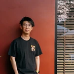
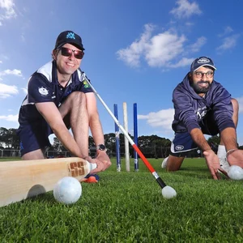
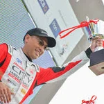
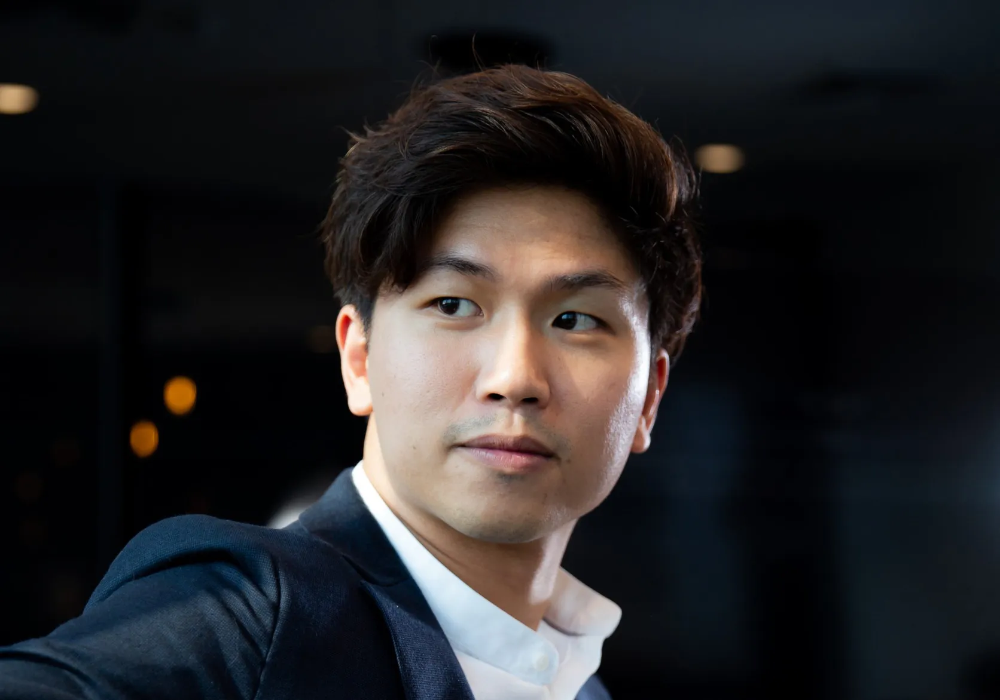
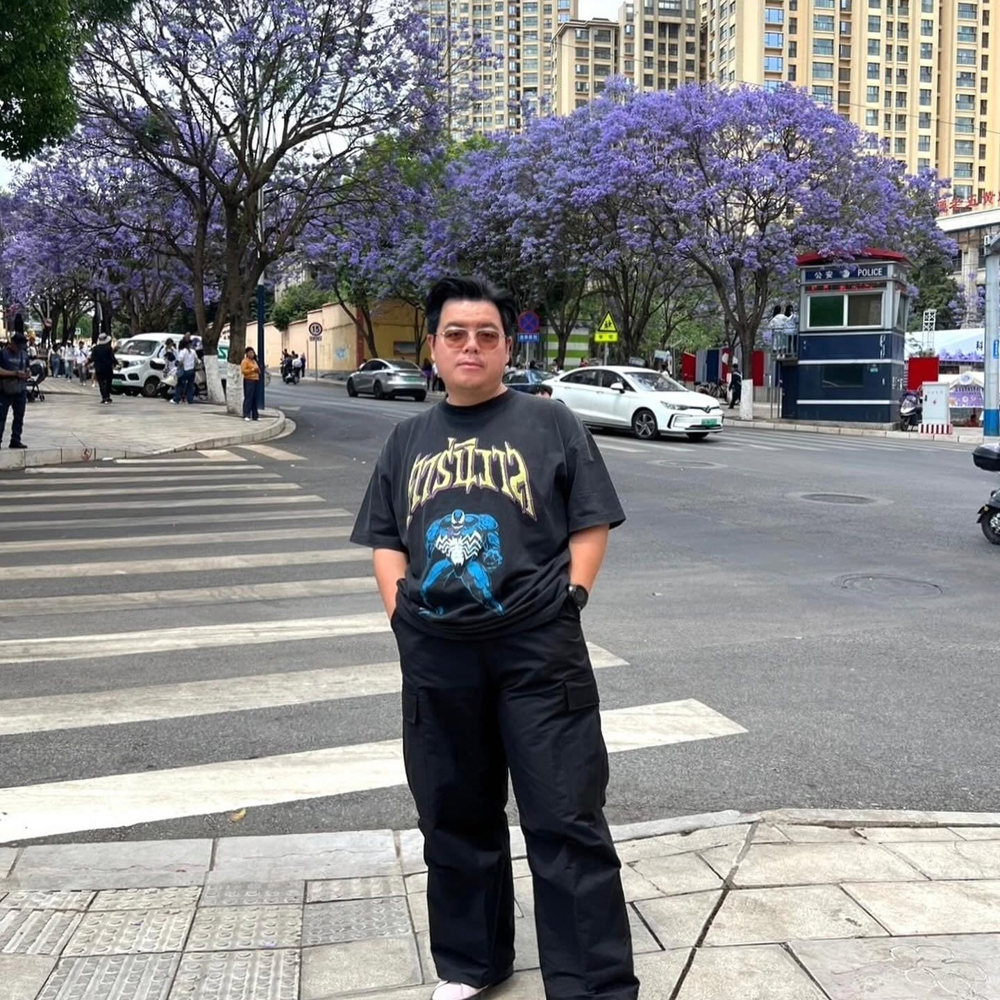
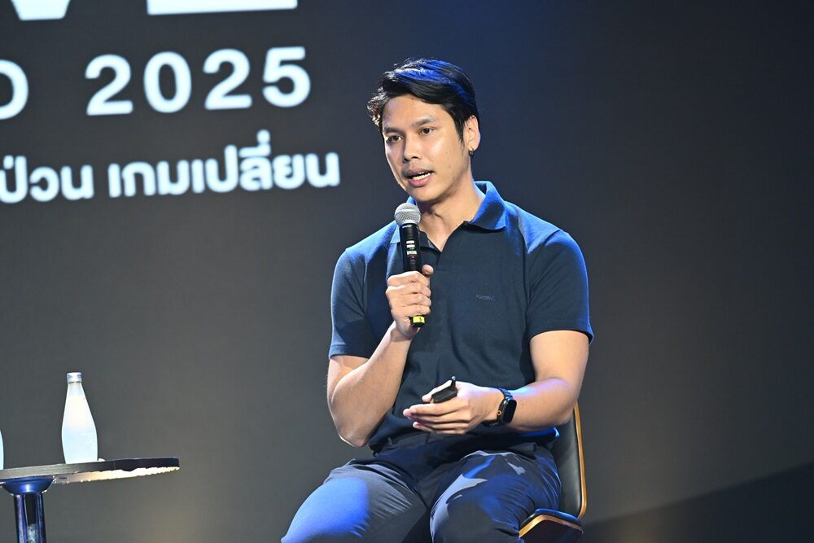

Wisdom Around the Table
Our Renowned Guests
Meet the visionary founders, seasoned investors, and creative specialists who have sat at Flow's Table to share their life journeys and business insights.
At Flow's Table, we believe that the best learning happens in safe, supportive, and open-minded spaces. Over the years, we have been honored to host some of the most prominent builders, tech executives, and financial mentors in the country. Here are some of the distinguished guests who have shared their wisdom with our community.
P'Mi Tiwa Shintadapong
President, Investors Association of ThailandPresident of the Investors Association of Thailand and one of the country's most respected value investors, specializing in identifying structural economic bottlenecks and businesses with durable pricing power. He champions 'rational faith' — conviction built on deep primary research rather than crowd psychology. As a cornerstone of Flow's Table, he regularly shares his 'wisdom over information' mindset and guides the natural flow of dialogue.

P'Jekky Suthon Singhasitthangkul
Value & Crisis Opportunity Investor | Eclipse Fund LeadA value-investing veteran with 15+ years identifying fundamentally strong businesses during market stress, panic selling, and valuation dislocation. Lead of the Eclipse Fund and creator of the proprietary 'Bottom-Fishing' strategy, he shares deep wisdom on finding value when others see only risk — believing that investing is the art of seeing value when others cannot.
P'Pom Pawoot Pom Ponpipat
Founder, TARAD.com | President, Thailand e-Commerce AssociationFounder of TARAD.com, Thailand's largest C2C e-commerce platform (acquired by Rakuten in 2009), and President of the Thailand e-Commerce Association. Widely recognized as the 'Godfather of Thai E-Commerce,' he has invested in over 60 startups and launched ventures since age 23. At the table, he shares data-driven leadership strategies and hard-won lessons from building Thailand's internet ecosystem from the ground up.
Shark Jing Chanapun Juangroongruangkit
SVP, Thai Summit Group & InvestorSenior Vice President of Thai Summit Group, one of Southeast Asia's largest automotive parts manufacturers, founded by her family in 1977 and now operating across 8 countries. A prominent business leader recognized for driving automation and Industry 4.0 transformation in manufacturing, she shares insights on scaling a multi-generational industrial empire, the future of smart manufacturing, and navigating the global automotive supply chain.
Dr. Kid Supachai Parchariyanon
Co-Founder & CEO, RISE | Managing Partner, SeaX VenturesCo-founder and CEO of RISE, Southeast Asia's premier corporate innovation accelerator, and Managing Partner at SeaX Ventures. A leading voice in the regional startup ecosystem, he mentors the community on scaling organizations through strategic innovation, building corporate-startup ecosystems, and the intersection of enterprise transformation and venture capital.

P'Toy Kasidis Satangmongkol
Founder, DataRockie & Data Science EducatorFounder of DataRockie, one of Thailand's leading data science education platforms, built as a solopreneur. A self-described 'generalist in practice, stoic at heart,' he has taught R and Python programming to thousands of students across the country. He brings a rare blend of data expertise, Stoic philosophy, and one-person-business strategy to Flow's Table conversations.

P'Tre Kittipol Pramoj
Director, Sammakorn & Racing DriverDirector of Sammakorn Public Company Limited, one of Thailand's leading real estate developers, and a competitive racing driver in the Thailand Super Series, racing a Ferrari 488 Challenge EVO in the Super Car GTM class. Also serving on the board of Tanachira Retail Corporation, he brings a rare dual perspective on calculated risk-taking—both in the boardroom and on the track.
P'Mek Nithi Satchatippavarn
Co-Founder & CEO, MyCloudFulfillmentCo-founder and CEO of MyCloudFulfillment, a tech-enabled supply chain and fulfillment platform for e-commerce businesses in Thailand. A Babson College graduate, he has successfully raised Series B funding and built one of the country's leading fulfillment services. He shares hard-won lessons on logistics optimization, scaling operations across multiple sales channels, and navigating the venture capital landscape in Southeast Asia.
P'Pek Punyawe Chantarakajorn
Professional Trader & AuthorA professional trader, investor, and author of five books on financial markets and investing psychology. He shares deep expertise on trading strategy, technical analysis, and the discipline required to navigate market volatility. Beyond charts and numbers, he brings philosophical perspectives on wealth creation, business moats, and the mindset of compounding knowledge over time.
P'Benz Arnun Treetitiapt
Digital Entrepreneur & SolopreneurA successful digital entrepreneur and solopreneur who pioneered self-funded educational courses in Thailand. At the table, he shares actionable frameworks on launching one-person businesses, designing high-margin digital products, and building active online audiences without external funding or large teams.
Shark Benz Vorapat Chavananikul
CFO & CSO, Boonrawd Trading | MD, Singha VenturesChief Financial Officer and Chief Strategy Officer of Boonrawd Trading (Singha), and Managing Director of Singha Ventures, the corporate venture capital arm of the Boonrawd Group. He also serves as Deputy CEO of Boonrawd Trading and Director of Singha Estate. With 20+ years spanning retail, consumer goods, and finance — including prior roles at Tesco Thailand, BCG, and Optasia Capital where he executed multiple IPOs and M&A deals — he shares powerful perspectives on corporate strategy, CVC investing, and steering one of Thailand's most iconic conglomerates through digital transformation.
P'Frung Narikun Ketprapakorn
Actress, Doctor & Content CreatorA beloved Thai actress, medical doctor, and content creator who shares her journey balancing a career in medicine with media production. She brings inspiring insights on discipline, mental wellness, and finding passion across multiple careers.
P'Kok Tanarat Ruckariyapong
Vice President, SAPPE (Mogu Mogu, Beauti Drink)Vice President of SAPPE Public Company Limited, the Thai beverage powerhouse behind globally loved brands like Mogu Mogu and Sappe Beauti, exporting to over 100 countries. Part of the Ruckariyapong family that built the company from a small snacks business in 1973 into a multi-billion-baht listed enterprise, he brings deep insights on scaling a family business, FMCG innovation, and building a global lifestyle brand from Thailand.
P'Em Udomsak Rakwongwan
Co-Founder & Advisor, Forward DeFi | Asst. Prof., Kasetsart UniversityCo-founder and advisor of Forward (Project Forward), a decentralized finance platform, and Assistant Professor of Mathematics at Kasetsart University with a Ph.D. in Financial Mathematics. He bridges the worlds of academic rigor and DeFi innovation, sharing deep expertise on algorithmic trading, blockchain architecture, and the future of decentralized financial systems.
P'Peesamac Peesadech Pechnoi
Co-Founder, BASE Playhouse | Learning Designer & TechnologistCo-founder of BASE Playhouse and a learning designer and technologist specializing in creative marketing and innovation strategy. With a background spanning brand campaigns and platform-based knowledge management, he brings fresh perspectives on blending education, technology, and storytelling to build engaging experiences that resonate with modern audiences.
P'Golf Natthakorn Wiangin
Tech & Media StrategyA tech and media strategy professional with experience spanning digital content, brand innovation, and the future of Thai media in the AI era. He shares insights on how traditional media companies are adapting to AI disruption, platform strategy, and the evolving relationship between technology and storytelling.
P'Nui Pongsuk Hiranprueck
Managing Director, Show No Limit & Host of Beartai HitechManaging Director of Show No Limit, a leading event and digital media company in Bangkok. As the long-running host of Beartai Hitech, Thailand's most influential tech TV program, and founder of the Thailand Game Show, he has been at the forefront of the country's tech media landscape for over two decades. He shares deep insights on bridging technology with mass audiences, digital media production, and the evolution of Thailand's gaming and tech communities.
P'Shane Prachaya Mora
Managing Director, SERVgroupManaging Director of SERVgroup, a Thai hospitality and lifestyle company. A successful young entrepreneur who found early business success in his 20s, he brings perspectives on hospitality branding, operational excellence, and building premium service businesses that stand apart in a competitive market.
P'Phone Ruttanun Vilailuck
Third-Generation Leader, Samart CorporationThird-generation leader of Samart Corporation, a Thai conglomerate founded in 1955 with 40 affiliates, four of which are listed on the Stock Exchange of Thailand. He leads Samart's strategic push to invest its own capital in technology concessions for government projects, earning long-term recurring revenue. Growing up at a dinner table where business was discussed like a strategy session, he shares unique perspectives on multi-generational enterprise, government tech infrastructure, and the aviation and telecom sectors.
P'Pol Amorpol Huvanandana
Co-Founder & CEO, MoreloopCo-founder and CEO of Moreloop, a circular economy platform that upcycles surplus fabric from garment factories into high-value products. Since 2018, Moreloop has rescued 40 tons of fabric and prevented over 630 tons of CO2 emissions. He brings deep insights on building a social enterprise, scaling sustainability business models, and proving that environmental impact and profitability can go hand in hand.
P'Pat Naranpat Thitipattakul
Managing Partner, Disrupt Health Impact FundManaging Partner of Disrupt Health Impact Fund, a Thailand-based venture capital firm investing in world-class HealthTech startups across five key areas: self-care, preventive care, silver age, holistic wellness, and smart hospitals. Alongside chairman Krating Poonpol, she leads investments of 17-50 million baht per company, backing deep-tech innovators like DiaMonTech (non-invasive glucose monitoring) and PocDoc. She shares sharp insights on evaluating health-tech founders, the future of preventive healthcare in Southeast Asia, and bridging global deep-tech into Thailand's world-class medical ecosystem.

P'Popp Polpat Songthamjitti
Co-Founder, GetLinks & Managing Partner, WhaleGroundCo-founder and CMO of GetLinks, a curated tech talent marketplace connecting 25 million professionals across Asia, and a Forbes 30 Under 30 Asia honoree. Now Managing Partner at WhaleGround, a Web3 venture capital firm, he shares insights on scaling cross-border startups, community-driven growth, and navigating the intersection of talent, technology, and decentralized finance.

P'Pound Trikachon Siritawechai
Founder, Woonplaepasa & Content CreatorFounder of Woonplaepasa (วุ้นแปลภาษา), one of Thailand's most viral language content brands known for blending humor with language education. Through OP CREATOR, he has built a massive following by making English accessible and entertaining. At the table, he shares lessons on building engaged communities through content, the creator economy, and turning passion into a sustainable business.
P'Can Tossapat Chunrahas
Professional Poker Player & InvestorOne of Thailand's top-ranked professional poker players with over $127,000 in live tournament earnings, including a High Roller title at Poker Dream Vietnam. Beyond the felt, he is an active investor connected with KANEKOJI Group and Basecamp Ventures. He brings unique perspectives on risk management, decision-making under pressure, and the psychology of calculated bets—skills that translate directly from the poker table to business and investing.

P'Ton Tanongsak Saeaw
Founder & CEO, Yuedpao (ยืดเปล่า)Founder and CEO of Yuedpao (ยืดเปล่า), one of Thailand's most beloved t-shirt and apparel brands with over 875,000 Facebook fans and 358,000+ TikTok followers. Starting from a small reselling business in 2013, he grew Yuedpao into a hundreds-of-millions-baht brand with the viral philosophy of selling to make friends, not just profit. A pioneer in sustainable fashion through the ReWear ReCare collaboration with PT and Circular, he shares hard-won lessons on brand building, defending thin margins, and competing against Chinese garment imports with authentic Thai storytelling.
P'Thoy Piyathida Chitaroon
Actress, Entrepreneur & Purpose CoachA celebrated Thai actress known for hit dramas including Baan Sila Dang (เลือดข้นหนึง), who has successfully transitioned into a multi-venture entrepreneur and purpose-driven coach with over 127,000 Instagram followers. As founder of FitU Academy, FitU Health Club, and SOS Sense of Style, she empowers others in health, fitness, and personal branding. A Thammasat University graduate, she shares inspiring perspectives on balancing a creative career with business building, faith-driven leadership, and living with purpose.